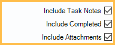

Task Search
Users can search for tasks using multiple criteria.
In the Tasks area, click Search.

Task Results
The task results grid displays tasks found using the criteria on the right.

The grid displays the date created, the date completed (when the task was marked as Done), and the task description. Double-click a task to open it.
Right-click options:
- Go To: Click to open the attached patient or appointment.
- Wiki: Click to open the the linked Wiki. Only an option when Detect wiki links in text boxes and grids is enabled in Wiki Setup.
- Web: Click to open the linked web page.
- PatNum: Click to open the associated patient's account. Only an option if a user has commented PatNum:# (e.g., PatNum:1823) in the task description or a task note. Multiple accounts may be listed if commented in the task description or notes.
- TaskNum: Click to open the associated task. Only an option if a user has commented TaskNum:# (e.g., TaskNum:2584) in the task description or a task note. Multiple tasks may be listed if commented in the task description or notes.
Search by:
Use the criteria on the right to find tasks.
Users: Search tasks by user.

- Show Hidden Users: Check to include hidden users in the User dropdown.
- User: Search for tasks from the specified user. Click Me to quickly select the logged-in user. If Include Task Notes is checked, also includes users attached to task notes.
Task Info: Search by information within the task.

- Task List: Search by Task List Description (i.e., name).
- Task Num: Search by task number. Search refreshes automatically once seven digits are entered.
- PatNum: Search for tasks associated with a patient number (for tasks that have a Patient type only).
- Priority: Search by Definitions: Task Priorities.
Text: Search for tasks by filtering keywords or phrases. Searches the Task Description (i.e., contents). If Include Task Notes is checked, includes task notes. If Include Attachments also searches Attachment Descriptions and Text.

- To include/exclude a phrase, enter it between quotations (e.g., "payment plan"). Multiple phrases can be searched by entering multiple sets of quotations (e.g., "payment plan" "past due"). To include/exclude individual keywords, type them outside of quotations (e.g., payment past due).
- Including: Search for tasks that contain specified keyword(s) or phrase(s).
- Excluding: Limit the task search by omitting tasks that contain the specified keyword(s) or phrase(s).
Date Created: Search tasks created in a specified date range.

- From / To: Search for tasks that have a Date/Time Entry between the date range. Click the calendar icon to select to and from dates.
- Clear: Click to clear all dates.
Date Completed: Search tasks completed in a specified date range.

- From / To: Search for tasks that have a Date/Time Finished between the date range. Click the calendar icon to select to and from dates.
- Clear: Click to clear all dates.
Additional Options: Search tasks by other criteria.
- Include Task Notes: When checked, applies filters to task notes.
- Include Completed: When checked, includes completed tasks in search.
- Include Attachments: When checked, applies filters to Attachment Descriptions and Text.

New Task: Click to create a new task.
Refresh: Click to update the Task Results grid using the criteria entered above.
Limit Results (50): When checked, search results are restricted to 50 tasks. When unchecked, there is no limit.
Run on Report Server: Only visible for offices using a report server (Report Setup: Report Server). Check to run the task search query on the report server to avoid slowness.
Hints
If the text TaskNum:##### is currently copied to the clipboard, the associated Task is immediately opened, without launching Task Search (e.g., if TaskNum:254 is copied to the clipboard, TaskNum:254 is immediately opened). If a matching Task is not found, Task Search opens with the TaskNum entered into the search criteria.